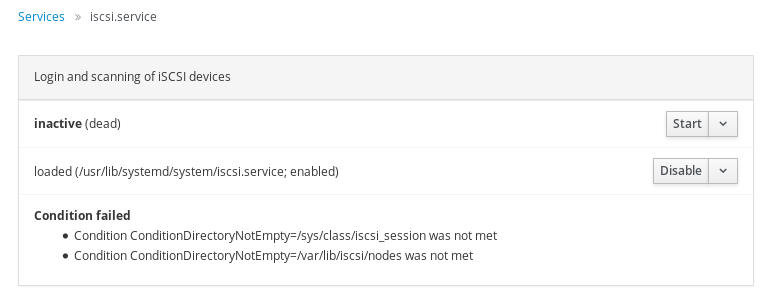
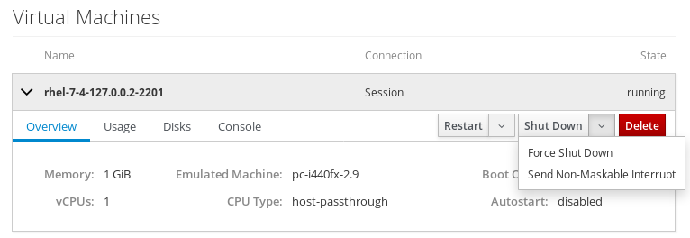

Cockpit is the modern Linux admin interface. We release regularly. Here are the release notes from versions 149 and 150.
Add information about unmet conditions for systemd services
Systemd units can have conditions which must be met in order for the service to start. Cockpit now shows unmet conditions in the details of a service, so that users can see why a service is in active.

Automatically enable and start newly created timers on the Services page
Cockpit allows the user to create custom systemd timers on the Services page, to run commands at particular times or after boot. Previously they had to be explicitly enabled and started to become effective; this now happens automatically.
Support Kubernetes authentication providers in kube config files
Some kubernetes deployments such as Google Compute Engine use Kubernetes authentication providers so that they can automatically regenerate their access token when needed. Cockpit now supports kube config files using this format.
Support sending non-maskable interrupt to VMs
The Shut Down button on the Machines page got a new option “Send Non-Maskable Interrupt”. This normally does not trigger a reaction (other than a kernel message), but the Linux kernel can be configured to react to this with a kernel panic. This allows administrators to debug hung virtual machines.

Support Dashboard installation into OSTree overlay
The cockpit-dashboard package can now be installed as package overlay into rpm-ostree. This enables managing multiple remote servers through one Cockpit instance on Atomic based systems.
Clear cockpit cookie on logout
Previously, after logging out (explicitly or due to session timeout) it could happen that revisiting a seen page would show a cached version instead of the login page. This has now been fixed by properly clearing Cockpit’s browser cookie.
Try it out
Cockpit 150 is available now: